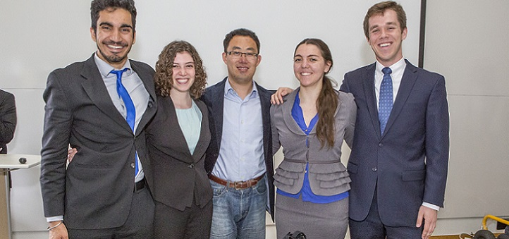

Academic Teaching Appointments
- Co-Lecturer and Project Mentor, 2016 Spring, Medical Device Design – ES227 (a problem-based learning course)
School of Engineering and Applied Sciences, Harvard University, Cambridge, MA - Teaching Assistant, 07/2007-07/2008
Department of Mechanical and Aerospace Engineering, State University of New York at Buffalo
I am passionate about teaching! I have been mentoring PhD and master students at Harvard and WPI, co-teaching classes at Harvard and SUNY buffalo.

Student Mentoring
- Evelyn Park (Harvard, PhD candidates)
-
Jessica Herrmann, Frank Dubose, Harnek Gulati, Cassie Lowell (Harvard, undergrad)
Inertial Measurement Unit based Running Gait Kinematics Sensing (ES227 project) - Yunzhao Ma, Master Thesis, 2012 , WPI
Passive Resonant Coil Based Fast Registration And Tracking System For Real-Time MRI-Guided Minimally Invasive Surgery, PDF
PDF - Satya Janga, Master Thesis, 2012, WPI
A Fast and Robust Image-Based Method for tracking Robot-assisted Needle Placement in Real-time MR Images, PDF
- Joshua Matte, Master Research Project, 2012, WPI
Compact Steerable Needle Driver for MRI-Guided Prostate Interventions - Elizabeth Alexander, Bachelor Thesis, 2011, WPI
Development of a Humanoid Robot for Autism Interventions in Children, PDF
- Yuanfang Gui, Master Research Project, 2011, WPI
FPGA-based High Speed Haptic Systems for Telerobotic Surgerys - Xiaoan Yan, Master Research Project, 2011, WPI
Parallel Manipulator for MRI-Guided Surgical Needle Placement